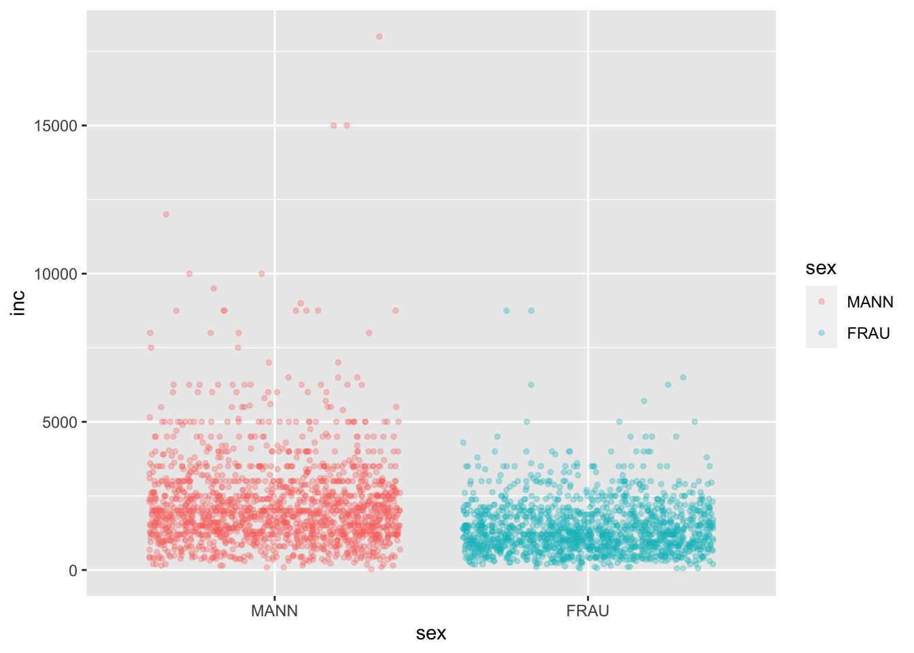
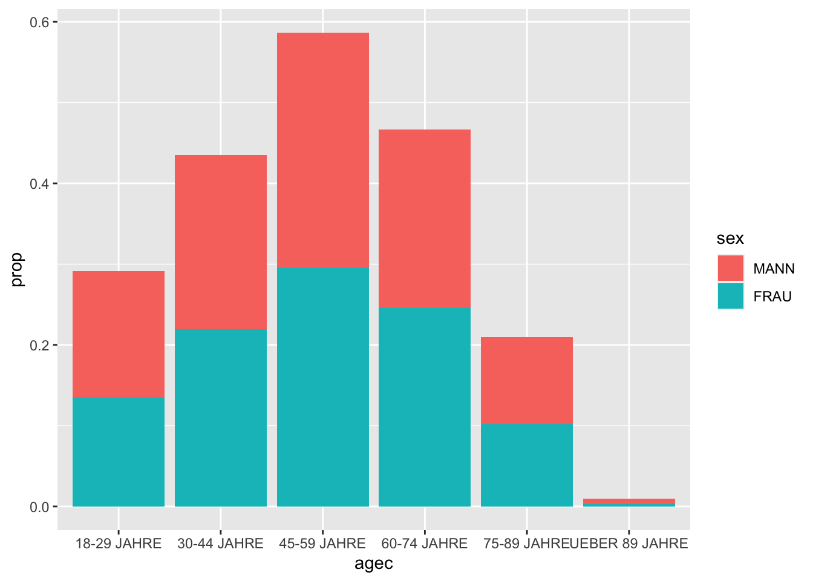

6 Grafiken erstellen
In diesem Kapitel werden wir lernen, welche Werkzeuge uns R zur Erstellung von Grafiken zur Verfügung stellt und
wie uns das Paket ggplot2 aus dem tidyverse ermöglicht durch explorative Datenanalyse verborgene Zusammenhänge zu entdecken, sowie
Resultate darzustellen und zu kommunizieren.
Im Gegensatz zum ursprünglichen Grafiksystem R Base Graphics, welches auf Base R aufsetzt, basiert ggplot2 auf der intuitiven Syntax
Grammar of Graphics. Hiermit lassen sich durch eleganten, flexiblen und konsistenten Code sehr komplexe Grafiken erstellen und nahtlos mit den
Funktionen des tidyverse verbinden.
Achtung! ggplot2 benötigt Datensätze im long Format. (siehe hierzu: R for Data Science - Tidy Data)
Da Grafiken mit ggplot2 immer nach dem gleichen Prinzip erstellt werden, ergeben sich immer folgende Schritte:
Schritt 1: Erstellung eines Objekts mit der Funktion ggplot().
Schritt 2: Definition der Datengrundlage mit dem ersten Argument data = datensatz.
Schritt 3: Definition von “aesthetic mappings,” also der Wahl einer Variable für die x-Achse: x = var1, y-Achse: y = var2,
Gewichtung: weight = gewicht und zur Gruppierung der Daten: group bzw. colour, shape, linetype oder fill = var3 über die Funktion mapping = aes().
Schritt 4: Definition verschiedener “Layer” bzw. “Schichten.” Hierbei definieren wir, was dargestellt werden soll - z.B. ein Histogramm oder Linien.
Dabei wird uns in der Anzahl an Schichten kein Limit gesetzt. Die Funktionen beginnen dabei immer mit dem Präfix geom_, z.B. geom_bar() und werden über den
Operator + hinzugefügt.
Im Verlauf des Kapitels werden wir die einzelnen Schritte noch einmal vertiefen, gleichwohl wollen wir mit eingängigen Beispiel beginnen.
Beispiel 1:
Grundlage unserer Grafik und damit erstes Argument der Funktion ggplot() ist der allbus2018. Aufbauend definieren wir in der Funktion aes(), welche Variablen in unserer Grafik auf welcher Achse abgebildet werden sollen. Da wir lediglich eine Abbildung der Häufigkeitsverteilung der Variable im19 anstreben, müssen wir nur das Argument x = spezifizieren. Anschließend wird über das Argument weight = eine Gewichtung vorgenommen. Damit haben wir unser Fundament gelegt. Über den Operator + fügen wir nun weitere Schichte hinzu. Als erstes “Layer” fügen wir über die Funktion geom_bar das gewünschte Balkendiagramm hinzu. Die Funktion führt dabei voreingestellt über das Argument stat = "count" einen Zählbefehl aus, welcher uns in Folge die Häufigkeitswerte der einzelnen Ausprägungen ausgibt. Als weitere Argumente definieren wir noch die Farbe der Balken mit fill = und das Auslassen fehlender Werte über `. Als Endpunkt fügen wir noch eine zweite Schicht hinzu, die uns mit der Funktionlabs()` ermöglicht alle Achsen frei zu Beschriften. Fertig!
allbus2018 %>%
drop_na(im19) %>%
ggplot(aes(x = im19, weight = wghtpew)) +
geom_bar(fill = "steelblue") +
labs(y = "Anzahl", title = "Häufigkeitsverteilung der Variable im19")Die folgende Grafik erweitert unsere Fähigkeiten zusätzlich um vier Punkte. Durch die nahtlose Integration der Funktionen des tidyverse und strengejacke ist es uns möglich innerhalb eines Objekts sowohl die Daten zu manipulieren, als auch diese in die nachfolgende Grafik einzubeziehen. So war es in unserem Beispiel von Nöten die Grupperungsvariable sex (Geschlecht) erst zu einem Faktor zu konvertieren, um sie nachstehend nutzen zu können - Funktion to_label(). Weiterhin haben wir das Nettoeinkommen der Befragten mit dem Argument y = auf der y-Achse abgebildet und das Geschlecht der Befragten über das Argument colour = als Gruppierungvariable gewählt. Damit erlaubt uns ggplot() die einzelnen Datenpunkte farblich hervorzuheben, sowie über die Funktion stat_summary() einen Mittelwertvergleich zwischen beiden Gruppen über ein Liniendiagramm abzubilden.
allbus2018 %>%
to_label(sex) %>%
drop_na(age, inc, sex) %>%
ggplot(aes(x = age, y = inc, colour = sex, weight = wghtpew)) +
geom_point(alpha = 0.1) +
stat_summary(fun = "mean", geom = "line", size = 0.8) +
labs(x = "Alter", y = "Einkommen", colour = "Geschlecht",
title = "Mittleres Einkommen nach Alter und Geschlecht")Nun wollen wir uns die einzelnen Schritte nochmal im Detail ansehen.
6.1 Schritt 1: Plot-Objekt erstellen

Wir beginnen mit einem Datensatz und erstellen ein Plot-Objekt mit der Funktion ggplot(). Als erstes Argument fügen wir unseren Datensatz ein data = datensatz. Hierbei bestehen zwei Möglichkeiten der Umsetzung.
# Ohne Pipe
g <- ggplot(data = allbus2018)
# Mit Pipe
g <- allbus2018 %>%
ggplot()6.2 Schritt 2: Aesthetic mapping
Im zweiten Schritt definieren wir das zweite Argument mapping = über die Funktion aes() - “aesthetic mappings.” Damit bestimmen wir welche Variablen benutzt werden sollen, um die Daten darzustellen. Im Folgenden wollen wir ergründen, inwieweit das Geschlecht der Befragten einen Einfluss auf ihr individuelles Nettoeinkommen (inc) hat. So definieren wir sex als Variable auf der x-Achse mit x = sex und die Variable inc mit y = inc auf der y-Achse. Da wir Gesamtdeutschland betrachten wollen, definieren wir noch mit weight = wghtpew das nötige Designgewicht. Der vorläufiger Befehl lautet entsprechend: mapping = aes(x = sex, y = im21, weight = wghtpew).
Zusätzlich erlaubt die Funktion aes() weitere Anpassungen über fill =, colour =, shape =, linetype = und group =. Diese Argumente helfen zum Einen der Gruppierungsvariable auf der x-Achse eine Farbe, Form oder Zugehörigkeit zuzuweisen, zum Anderen lässt sich damit aber auch eine dritte Variable (z) als Gruppierungsvariable (siehe Beispiel 2) zuweisen.
In unserem Beispiel wollen wir, dass die beiden Ausprägungsmerkmale von Geschlecht verschiedene Farben zugewiesen bekommen und die nachfolgenden Objekte entsprechend ausgefülllt werden. Der fertige Befehl lautet damit: mapping = aes(x = sex, y = inc, weight = wghtpew, fill = sex, colour = sex). Das Argument colour = ist folglich ein Attribut für Linien und Punkte; das Argument fill = ist ein Attribut für Flächen.
Wichtig! Wenn wir die Funktion aes() innerhalb der Funktion ggplot() definieren, gelten sie für alle Schichten, d.h. für alle Elemente der Grafik. Wir können später die “mappings” auch für jede Schicht einzeln definieren und damit auf verschiedene Datensätze zugreifen, oder andere Variablen verwenden.
g <- allbus2018 %>%
to_label(sex) %>%
drop_na(sex, inc) %>%
ggplot(mapping = aes(
x = sex,
y = inc,
weight = wghtpew,
fill = sex,
colour = sex
))g ist damit ein “leeres” Plot-Objekt, dass noch nichts anzeigt, da wir noch keine “Layer” definiert haben. Das Objekt ist damit ein ggplot2-Objekt, welches im R-Studio Fenster Plots ausgegeben werden kann. Wir sehen folglich ein Grafikgerüst mit der richtigen Achsenzuweisung.
g6.3 Schritt 3: Schichten (“Layer”) hinzufügen
Dem Plot-Objekt g wollen wir nun mit den Funktionstypen geom_ weitere Schichten beifügen. So addieren wir mit dem + Operator einfach ein weiteres “Layer” - g + geom_.
6.3.1 Punktdiagramm
Als erstes möchten wir die einzelnen Beobachtungen als Datenpunkte abgetragen haben. Hierbei können wir entweder unsere Ausgangssytax optimieren, oder das Objekt g einfach erweitern.
Anmerkung: Mit dem Argument `` werden fehlende Werte in den Schichten außen vor gelassen und wir verhindern eine Warnmeldung.
# Ausgangssyntax optimieren
allbus2018 %>%
to_label(sex) %>%
drop_na(sex, inc) %>%
ggplot(mapping = aes(x = sex, y = inc, weight = wghtpew, fill = sex, colour = sex)) +
geom_point()
# Objekt erweitern
g +
geom_point()
Wollen wir das Überlagern der Datenpunkte (overplotting) verhindern, können wir auch auf die Funktion geom_jitter() zurückgreifen. In Anwendung werden uns die Punkte nebeneinander gezeigt.
g +
geom_jitter()Mit dem Argument width = können wir zusätzlich bestimmen, wie breit die Streuung der Punkte sein soll.
g +
geom_jitter(width = 0.5, )Weitere Argumente sind size = für die größe der Punkte und alpha = zur Bestimmung der Transparenz. Zudem lassen sich wie gehabt im Fenster Help über den Befehl ?geom_jitter in der Konsole weitere Argumente einsehen.
g +
geom_jitter(size = 1, alpha = 0.3, )
6.3.2 Zentrale Tendenz und Streuung abbilden
Zur Darstellung der zentralen Tendenz und Streuung gibt uns ggplot2 zusätzliche Schichten an die Hand. Genannt seien hier geom_boxplot() zur Darstellung von Boxplot-Diagrammen und geom_violin() für Violin-Diagramme.
g +
geom_boxplot()In einem Boxplot wird der Median abgetragen, d.h. das Rechteck repräsentiert die mittleren 50% und die Striche (“whiskers”) zeigen den 1,5 * IQR (Interquantilbereich). Die einzelnen Punkte stellen Ausreisser dar.
Wollen wir den Median sehen, müssen wir das Argument fill = sex weglassen.
g <- allbus2018 %>%
to_label(sex) %>%
drop_na(sex, inc) %>%
ggplot(mapping = aes(x = sex,
y = inc,
weight = wghtpew,
colour = sex))
g +
geom_boxplot()
Violin-Diagramme sind Boxplot-Diagrammen sehr ähnlichen, wenngleich sie nicht die Quantile, sondern ein “kernel density estimate” zeigen - d.h. eine Abbildung der Kerndichte. Hier bietet sich das Argument fill = sex zudem ideal an.
g <- allbus2018 %>%
to_label(sex) %>%
drop_na(sex, inc) %>%
ggplot(mapping = aes(x = sex,
y = inc,
weight = wghtpew,
fill = sex))
g +
geom_violin()
Stellen wir fest, dass die Farbgebung immer wieder neu angepasst werden muss, sollten wir das mapping entsprechend anpassen.
# Ausgang
g <- allbus2018 %>%
to_label(sex) %>%
drop_na(sex, inc) %>%
ggplot(mapping = aes(x = sex,
y = inc,
weight = wghtpew))# Boxplot
g +
geom_boxplot(aes(colour = sex), )# Violin
g +
geom_violin(aes(fill = sex), )6.3.3 Mehrere Schichten kombinieren
So ist es uns auch möglich mehrere “Layer” zu kombinieren. So müssen wir lediglich mehrere geom_ Funktionen mit dem + Operator verbinden:
g +
geom_violin(aes(fill = sex), ) +
geom_jitter(aes(colour = sex), alpha = 0.2, width = 0.4, )6.4 Verschiedene Grafiken für verschiedene Datentypen
In diesem Kapitel wollen wir uns eine Übersicht über die diversen Geoms in ggplot2 für verschiedene Kombinationen von Variablen ansehen. So können wir entweder eine Variable auf der x-Achse oder y-Achse darstellen oder jeweils eine Variable auf der x-Achse und y-Achse. Diese Variablen können sowohl kontinuierlich (metrisch) oder kategorial (nominal/ordinal) sein.
Wichtig! Wir können in diesem Kapitel nur eine spezifische Auswahl der möglichen Geoms betrachten, da ggplot2 sehr umfangreich ist. Für eine umfassende Dokumentation aller Funktionen siehe: ggplot2 Dokumentation. Unser Ziel ist lediglich eine Befähigung zum eigenverantwortlichen Arbeiten und Problemlösung herzustellen und den kreativen Prozess der Datenvisualisierung einzuleiten.
6.4.1 Eine Variable
Sofern wir nur eine Variable auf der x-Achse abtragen möchten, müssen wir dennoch Werte auf der y-Achse definieren. In diesem Zusammenhang wird es sich mehrheitlich um z.B. Häufigkeitsverteilungen etc. handeln.
6.4.1.1 Kategoriale Variablen
Handelt es sich bei unserer Analyse um eine kategoriale Variable, dann verwenden wir oft einen bar chart bzw. bar graph. Hierbei wird die betreffende Variable anhand eines Rechtecks auf der x-Achse abgetragen, wobei es sich häufig um absolute bzw. relative Häufigkeitsverteilungen handelt. Die Funktion, die hierfür verwendet wird, heißt geom_bar().
Als Beispiel ziehen wir die Alterskategorien der Befragten heran.
allbus2018 %>%
to_label(agec) %>%
drop_na(agec) %>%
ggplot(aes(x = agec, weight = wghtpew)) +
geom_bar(fill = "steelblue", colour = "red") Merke: Sofern wir fill = "steelblue", colour = "red" nicht innerhalb der aes() Funktion verwenden, dann handelt es sich nicht um Gruppierungsvariablen, sondern ausschließlich um Farbgebungen der Grafikobjekte. So färben wir mit fill = "steelblue" lediglich die Balken in Stahlblau ein. Eine Übersicht über die verschiedenen Farbvarianten erhalten wir mit der Funktion colours(). Es gibt 657, wenn gleich nur Zwanzig im folgenden Output dargestellt werden.
colours() %>% sample(20)## [1] "grey90" "firebrick1" "mistyrose1" "gray" "navajowhite2"
## [6] "indianred" "gray93" "maroon" "darkkhaki" "grey73"
## [11] "gray66" "orange" "gray61" "gray40" "lightblue3"
## [16] "skyblue3" "gold" "seashell4" "gray31" "grey16"Im nächsten Schritt wollen wir unser Balkendiagramm nicht mit absoluten Werten ausgeben, sondern mit relativen Häufigkeiten. Hierzu ist es wichtig zu wissen, dass in der vorherigen Grafik ein entscheidendes Argument mit Standardwert eingegangen ist, das wir nun anpassen müssen. So fügen wir der vorherigen Grafik die Argumente aes(y = ..count..) hinzu. Wir definieren also auf der y-Achse eine Variable, die unmittelbar aus der x-Achse errechnet werden soll. Mit dem Befehl ..count.. handelt es sich um eine absolute Auszählung der Häufigkeiten. Wollen wir eine relative Häufigkeitsverteilung verwenden wir den Befehl aes(y = ..prop..), also eine proportionale Auszählung. Zudem müssen wir noch definieren aus welcher bzw. wie vielen Gruppe/n die Werte relational geschöpft werden sollen. Dies geschieht über den Befehl aes(y = ..prop.., group = 1). Damit werden die Werte relational bzw. proportinal aus einer Gruppe gebildet und bilden damit Prozentwerte zu 100% ab (die Darstellungsform auf der y-Achse lernen wir in den kommenden Kapiteln)
allbus2018 %>%
to_label(agec) %>%
drop_na(agec) %>%
ggplot(aes(x = agec, weight = wghtpew)) +
geom_bar(aes(y = ..prop.., group = 1), fill = "steelblue", colour = "red") Weiterhin können wir zusätzliche Gruppierungvariablen angeben, anhand derer die Balken farblich kodiert werden. Im gewählten Beispiel: Geschlecht.
allbus2018 %>%
to_label(agec, sex) %>%
drop_na(agec, sex) %>%
ggplot(aes(x = agec, weight = wghtpew, fill = sex)) +
geom_bar(aes(y = ..prop.., group = sex)) 
Standardmäßig kreiert ggplot2 einen stacked Bar Chart, die Balken werden also “gestapelt.” Wollen wir hingegen die Balken nebeneinander stehen sehen, können wir das Argument position = "dodge" verwenden.
allbus2018 %>%
to_label(agec, sex) %>%
drop_na(agec, sex) %>%
ggplot(aes(x = agec, weight = wghtpew, fill = sex)) +
geom_bar(aes(y = ..prop.., group = sex), position = "dodge") Kontinuierliche Variablen
Für kategoriale Variablen bieten sich eine Vielzahl von Grafikobjekten an. Beginnen möchten wir mit dem Histogramm, welches die Verteilung einer numerischen Variable idealen abträgt. Dazu werden die Werte einer Variable in diskrete Intervalle (bins) eingeteilt. Auf der y-Achse werden dazu, analog zu einem Bar Chart, die Häufigkeiten in den Intervallen abgebildet. Von besonderer Bedeutung ist hier die Bestimmung der Intervallgrößen (binwidth), da hierüber die Verteilung maßgeblich beeinflusst wird - die Grundeinstellung liegt bei bins = 30.
Hier ein Beispiel anhand der Altersverteilung in unserer Stichprobe mit den Grundeinstellungen.
allbus2018 %>%
drop_na(age) %>%
ggplot(aes(x = age, weight = wghtpew)) +
geom_histogram(colour = "red")## `stat_bin()` using `bins = 30`. Pick better value with `binwidth`.Wir bestimmen die binwidth selbst. Wir legen eine Altersspanne von 2 Jahren pro Balken fest - binwidth = 1.
allbus2018 %>%
drop_na(age) %>%
ggplot(aes(x = age, weight = wghtpew)) +
geom_histogram(binwidth = 1, colour = "red")Die Bestimmung der binwidth sollte natürlich immer von der Skala der Variable abhängen und damit weder zu fein noch zu grob ausfallen.
Im nächsten Schritt wollen wir auf der y-Achse die relativen Werte abgetragen sehen. Hierfür verwenden wir das Argument aes(y = ) mit der zugehörigen Funktion ..density.., damit geom_histogram(aes(y = ..density..)).
allbus2018 %>%
drop_na(age) %>%
ggplot(aes(x = age, weight = wghtpew)) +
geom_histogram(aes(y = ..density..), binwidth = 5, fill = "steelblue", colour = "black")Zudem lassen sich auch in Histogrammen Gruppierungsvariablen verwenden.
allbus2018 %>%
drop_na(age) %>%
to_label(sex) %>%
ggplot(aes(x = age, weight = wghtpew)) +
geom_histogram(aes(y = ..density.., fill = sex), binwidth = 5, colour = "black")Wir können die Balken auch über das Argument position = übereinander legen mit position = "identity".
allbus2018 %>%
drop_na(age) %>%
to_label(sex) %>%
ggplot(aes(x = age, weight = wghtpew)) +
geom_histogram(aes(y = ..density.., fill = sex), binwidth = 5, position = "identity", alpha = 0.4)Oder sie nebeneinander behalten position = "dodge".
allbus2018 %>%
drop_na(age) %>%
to_label(sex) %>%
ggplot(aes(x = age, weight = wghtpew, fill = sex)) +
geom_histogram(aes(y = ..density.., fill = sex), binwidth = 5, position = "dodge")6.4.2 Zwei Variablen
Jetzt wollen wir zwei Variablen auf der x-Achse und y-Achse abbilden. Auch hier hängen die Möglichkeiten der geoms vom Datentyp der Variable ab.
6.4.2.1 X und Y kategorial
Diese Konbination der Datentypen hält recht wenige Möglichkeiten der grafischen Aufbereitung bereit. Legitim ist in jedem Fall der grafische Abtrag der gemeinsamen Häufigkeiten. Hierfür gibt es die Funktion geom_count().
Als interessantes Beispiel dient die gemeinsame Häufigkeit zwischen Alterskategorie und Bildungsabschluss.
allbus2018 %>%
to_label(agec, educ) %>%
drop_na(agec, educ) %>%
mutate(agec = str_remove(agec, "JAHRE")) %>%
ggplot(aes(x = agec, y = educ, weight = wghtpew)) +
geom_count()Die gemeinsamen Häufigkeiten werden durch geom_count vor allem über den Durchmesser der Punkte dargestellt (vgl. Funktion crosstab()).
6.4.2.2 X kategorial und Y kontinuierlich
Wenn eine der Variablen kategorial ist, dann können wir diese statt als Gruppierungsvariable auf der x-Achse verwenden. Gute Beispiele waren hierfür die in Kapitel 6.3.2 gezeigten Box- und Violindiagramme. Zudem können wir auch die Funktion geom_col() für zwei Variablen nutzen. Diese Funktion ist eng mit geom_bar() verwandt, wenngleich sie keine Aggregation der Daten über stat = "count" vornimmt, sondern nativ zwei Variablen zulässt und als Grundeinstellung mit stat = identity arbeitet. Die Variable auf der y-Achse bildet entsprechend alle Beobachtungen in den Kategorien auf der x-Achse ab.
Als Beispiel dient uns das Geschlecht der Befragten und ihr individuelles Nettoeinkommen.
allbus2018 %>%
to_label(sex) %>%
drop_na(sex, inc) %>%
ggplot(aes(x = sex, y = inc, weight = wghtpew, fill = inc)) +
geom_col(position = "dodge")
6.4.2.3 X und Y kontinuierlich
Scatterplot
Wenn beide Variablen kontinuierlich sind, haben wir eine ganze Reihe an Möglichkeiten der Zusammenhang zwischen beiden abzubilden. Nachstehend wollen wir uns exemplarisch mit der Darstellung eines “Scatterplots” und Liniendiagramms beschäftigen. Hierfür verwenden wir die Funktionen geom_point() bzw. geom_line().
Als Beispiel wollen wir den Zusammenhang zwischen Alter und Arbeitsstunden pro Woche betrachten.
allbus2018 %>%
drop_na(age, dw15) %>%
ggplot(aes(x = age, y = dw15, weight = wghtpew)) +
geom_point()Im nächsten Schritt wollen wir die Daten grafisch aufbereiten und eine Gruppierungsvariable einbringen, um noch tiefer in die Zusammenhänge einzutauchen. Die Gruppierung nehmen wir hier wieder anhand des Geschlechts vor. Zudem passen wir die Größe über das Argument size = und die Transparenz über alpha = an. Auch die Form der Punkte kann bei der Visualisierung von Zusammenhängen wichtig sein. Diese passen wir über das Argument shape = in der Funktion aes() an.
allbus2018 %>%
to_label(sex) %>%
drop_na(age, dw15, sex) %>%
ggplot(aes(x = age, y = dw15, weight = wghtpew, colour = sex, shape = sex)) +
geom_point(size = 2, alpha = 0.8)
Wir können unschwer ein auffächern der beiden Geschlechtergruppen hinsichtlich der wöchentlichen Arbeitszeit erkennen, die wir in einem zweiten Schritt durch eine Mittellinie verdeutlichen möchten. Hierfür nutzen wir die Funktion stat_summary(), die uns über ihre Argumente fun = für “function” und geom = die Zusammenfassung von Daten erlaubt.
allbus2018 %>%
to_label(sex) %>%
drop_na(age, dw15, sex) %>%
ggplot(aes(x = age, y = dw15, weight = wghtpew, colour = sex, shape = sex)) +
geom_point(size = 2, alpha = 0.4) +
stat_summary(fun = "mean", geom = "line", size = 1) 
Liniendiagramm
Mit der Funktion geom_line() könne wir auch Liniendiagramme bilden. Diese Funktion bietet sich vor allem bei aggregierten Daten an, da die sinnvolle Darstellung eines Liniendiagramms einen spezifischen y-Wert zu jedem x-Wert verlangt. Unter dieser Voraussetzung sind geom_line() und stat_summary() in ihrer Darstellung äquivalent.
Als Beispiel soll uns wieder der Zusammenhang zwischen Alter und wöchentlicher Arbeitszeit dienen.
allbus2018 %>%
drop_na(age, inc) %>%
group_by(age) %>%
mutate(incm = weighted_mean(inc, weights = wghtpew)) %>%
ggplot(aes(x = age, y = incm)) +
geom_line()Wir können den vorliegenden Graphen auch mit Punkten ergänzen und das Aussehen der Linie verändern.
allbus2018 %>%
drop_na(age, inc) %>%
group_by(age) %>%
mutate(incm = weighted_mean(inc, weights = wghtpew)) %>%
ggplot(aes(x = age, y = incm)) +
geom_line(linetype = "dashed") +
geom_point(size = 2)Regression
Abschließend können wir auch Regressionen innerhalb der Grafiken berechnen lassen.
Da wir folgend mit polynomial Regressionen arbeiten möchten, empfehlen wir das Paket splines und ggpmisc zu installieren.
library(splines)
library(ggpmisc)## Lade nötiges Paket: ggpp##
## Attache Paket: 'ggpp'## Das folgende Objekt ist maskiert 'package:ggplot2':
##
## annotateWir wollen folglich anhand des Alters das individuelle Nettoeinkommen prognostizieren.
allbus2018 %>%
to_label(sex) %>%
drop_na(age, inc, sex) %>%
ggplot(aes(x = age, y = inc, weight = wghtpew, group = sex, colour = sex)) +
geom_point(size = 2, alpha = 0.1) +
geom_smooth(method = "lm", formula = y ~ ns(x, 1)) +
stat_poly_eq(formula = y ~ ns(x, 1),
aes(label = paste(..eq.label.., ..rr.label.., sep = "~~~")),
parse = TRUE) allbus2018 %>%
to_label(sex) %>%
drop_na(age, inc, sex) %>%
ggplot(aes(x = age, y = inc, weight = wghtpew, group = sex, colour = sex)) +
geom_point(size = 2, alpha = 0.1) +
geom_smooth(method = "lm", formula = y ~ ns(x, 2)) +
stat_poly_eq(formula = y ~ ns(x, 2),
aes(label = paste(..eq.label.., ..rr.label.., sep = "~~~")),
parse = TRUE) 
allbus2018 %>%
to_label(sex) %>%
drop_na(age, inc, sex) %>%
ggplot(aes(x = age, y = inc, weight = wghtpew, group = sex, colour = sex)) +
geom_point(size = 2, alpha = 0.1) +
geom_smooth(method = "lm", formula = y ~ ns(x, 3)) +
stat_poly_eq(formula = y ~ ns(x, 3),
aes(label = paste(..eq.label.., ..rr.label.., sep = "~~~")),
parse = TRUE) In Anbetracht der erklärten Varianz in Verhältnis zur Komplexität der Regression scheint eine Polynomfunktion 2. Grades den Zusammenhang am Besten abzubilden. Bei den Männern handelt es sich immerhin um eine Varianzaufklärung von fast 10%.